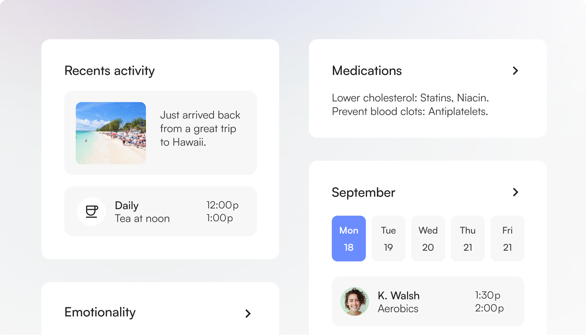
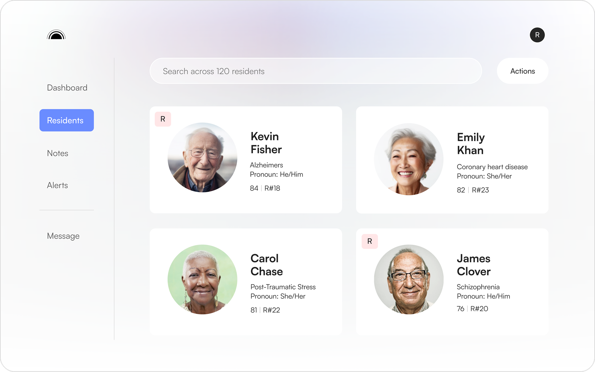
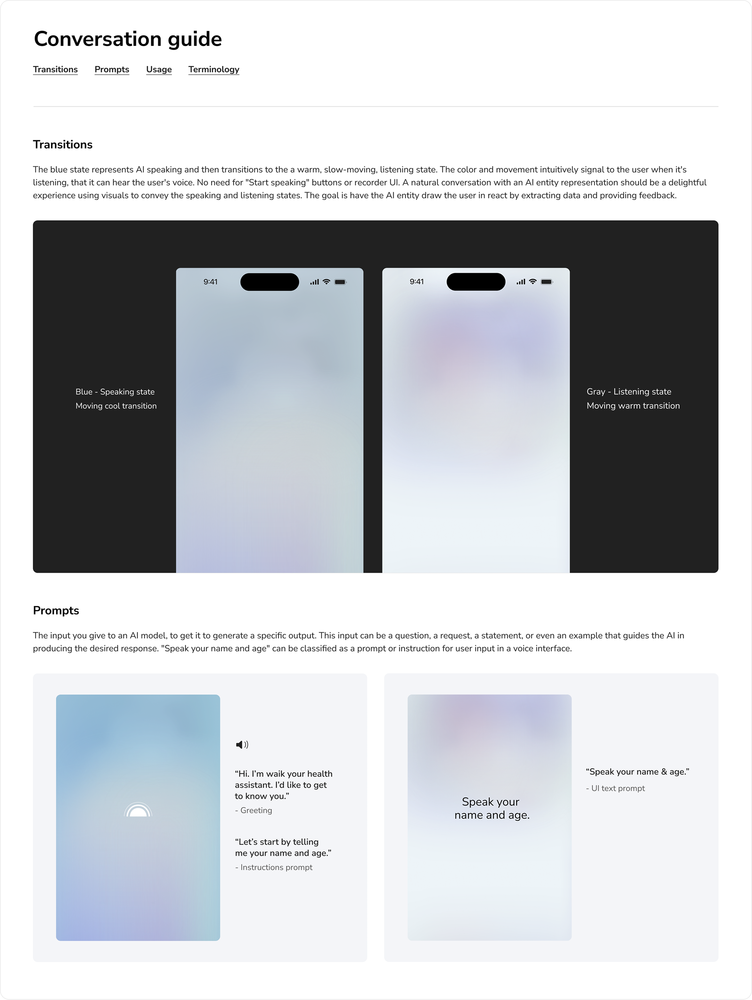
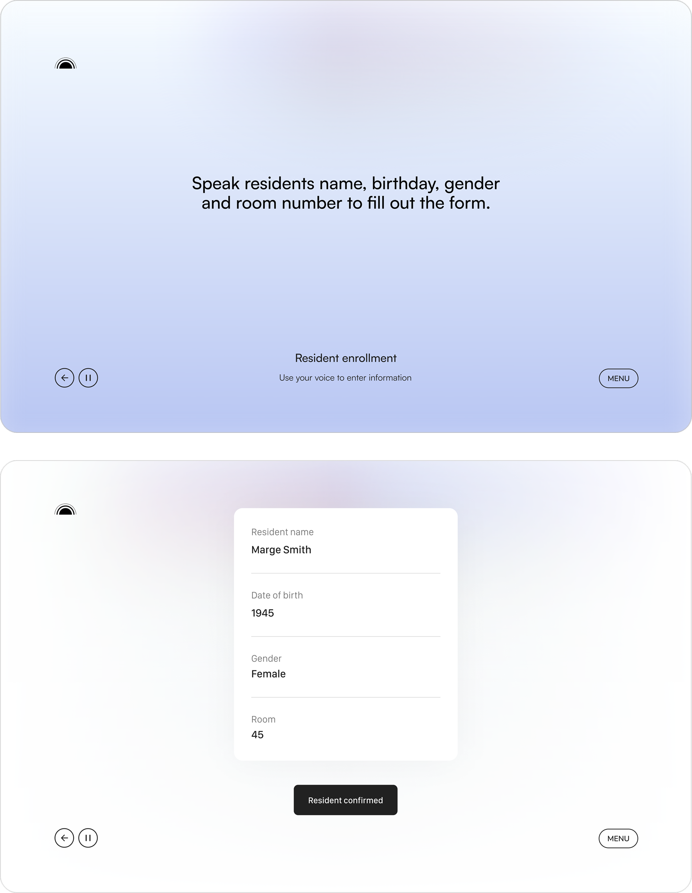

<div class="view">
<div class="template-inner template-inner--case-study" style='background-color:#fff'>

    <div class="case-study-wrapper">
        <div class='text-center case-study-section case-study-section--hero' style='background-color:#F4F5F8'>
            <div class="case-btn-back-wrapper">
                <a href='/page/case-studies' id="case-study-back" class="btn btn-link">
                    
                </a>
            </div>
            <div class="case-study__content">
                <h1>Solving assisted living <br> epidemics with AI</h1>
                <p>VUI AI, Visual & Interaction Design, Content Strategy, and Testing.</p>
            </div>
            <div class="img-wrap  case-hero__picture case-study-inner-content">
                <picture class='img-full'>
                    <source 
                        media="(max-width: 768px)" 
                        srcset="../../assets/images/M_WakeHero.png"
                    />
                    
                </picture>
            </div>
        </div>
        <!-- end section -->
        <div class="case-study-section">
            <div class="case-study-inner-content">
                <h2 class="text-center">Project Overview</h2>
                <p class="">This startup that aims to address the challenges 
                    of loneliness and cognitive decline among elder care residents, 
                    alleviate caregiver overload by enabling more personalized and 
                    empathetic interactions, and provide administrators with actionable 
                    emotional insights through real-time data. By focusing on emotional 
                    well-being and leveraging AI, to enhance the quality of care, build 
                    stronger connections between residents and caregivers, as well as 
                    create more supportive and resilient elder care environments. 
                    I created design elements and guidelines for a voice user interface 
                    that teaches and learns from users. I also utilizing design principals 
                    from collaborative sessions with stakeholders to create a dashboard and 
                    onboarding flow for residents and staff from zero to one.</p>
                <picture>
                    <source 
                        media="(max-width: 768px)" 
                        srcset="../../assets/images/M_WakeResidents.png"
                    />
                    
                </picture>
            </div>
            <div class="case-study-inner-content">
                <h2 class="text-center">Process & strategy</h2>
                <p class="">The process begin with a collaborative sessions with stakeholders. 
                    In the first session we discussed the problem, why it matters, target personas and their journeys. 
                    The second covered design style and inspiration, color palette options. 
                  The third session we gathered visuals for mood boards, typography and analyzed the market. From these sessions we aligned on these core principals to define the experience:
                        <br><br>
                        1. Companionship over utility: Built to be relational, not transactional. Complete tasks and builds trust.<br>
                        2. Emotionally intelligent architecture: Adapts to emotional states, responding with empathy and care<br>
                        3. Memory as relationship: Remembers stories, not just data. Memory is a living context.<br>
                        4. Ritual as interface: Every flow has emotional rhythm.<br>
                        5. Voice-first, aware design: Speaks gently, listens deeply, and adapts emotionally.<br>
                        6. Chitchat as a universal node: Always available for spontaneous companionship.<br>
                        7. The ever-faithful scribe: Documents with reverence. It captures, reflects, and learns, so it can care more deeply.</p>
                <picture>
                    <source 
                        media="(max-width: 768px)" 
                        srcset="../../assets/images/M_WakeVoice.png"
                    />
                    
                </picture>
            </div>
            <div class="case-study-inner-content">
                <h2 class="text-center">What’s next</h2>
                <p class="">Building out the VUI, UX and it’s Agentic AI for a pilot program. The data and feedback will be used to understand pain-points, areas of delight and where technical and visual adjustments are needed to improve the overall UX.</p>
                <picture>
                    <source 
                        media="(max-width: 768px)" 
                        srcset="../../assets/images/D_SpeakingListening.png"
                    />
                    
                </picture>
            </div>
        </div>
        <!-- end section -->
    </div>
</div>
</div>
